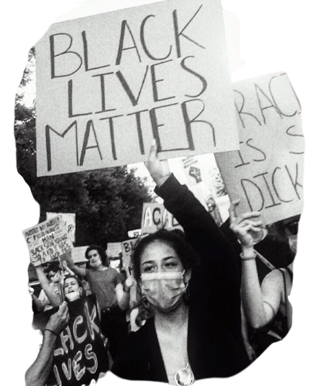

impact of
racism

psychological & emotional effects
racism can cause serious emotional and mental harm. People who experience discrimination often suffer from anxiety, depression, and low self-esteem. These effects are especially harmful to children and teens, who may internalize negative messages about their identity. Over time, the stress of living with racism can lead to emotional exhaustion, social withdrawal, and long-term trauma, affecting overall mental health.
health & wellbeing
racial discrimination has been directly linked to poor health outcomes. People from marginalized communities often face unequal access to quality healthcare and may be misdiagnosed or ignored by medical professionals. In addition, the chronic stress caused by racism can lead to physical health problems like heart disease, hypertension, and weakened immune systems. These health disparities highlight the urgent need for equity in healthcare.
education & opportunities
racism affects students both inside and outside the classroom. Bias in school systems, unequal funding, and lower expectations from teachers can limit educational success for students of color. Racial bullying and lack of cultural representation in curricula also create unwelcoming environments. These disadvantages reduce access to higher education and career opportunities, reinforcing long-term inequality.
social division & injustice
racism fractures societies by creating “us versus them” mindsets. It fuels prejudice, hate crimes, and mistrust between different racial or ethnic groups. Injustice is also visible in the legal system, where racial minorities are more likely to be arrested, sentenced harshly, or mistreated by law enforcement. These divisions make it difficult to build inclusive and peaceful communities.